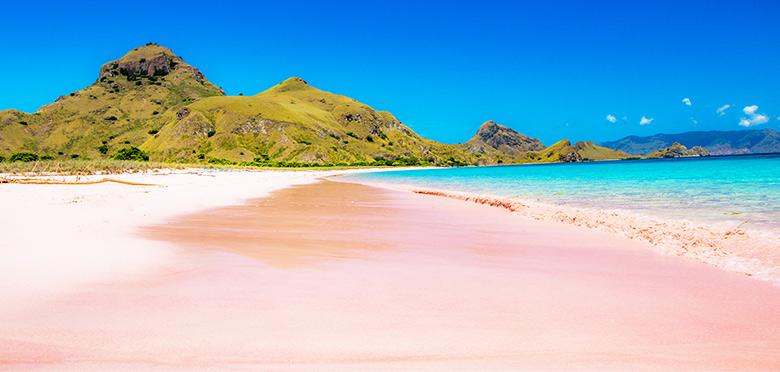

Wisata Alam Lombok

GUNUNG RINJANI - NUSA TENGGARA BARAT
Gunung Rinjani adalah gunung yang berlokasi di Pulau Lombok, Nusa
Tenggara Barat. Gunung yang merupakan gunung berapi kedua tertinggi
di Indonesia dengan ketinggian 3.726 m dpl serta terletak pada
lintang 8º25' LS dan 116º28' BT ini merupakan gunung favorit bagi
pendaki Indonesia karena keindahan pemandangannya. Gunung ini
merupakan bagian dari Taman Nasional Gunung Rinjani yang memiliki
luas sekitar 41.330 ha dan ini akan diusulkan penambahannya sehingga
menjadi 76.000 ha ke arah barat dan timur.

PANTAI PINK - LOMBOK TIMUR
Pantai Tangsi atau yang lebih dikenal dengan Pantai Pink dari Pulau
Lombok terletak di desa Sekaroh, kecamatan Jerowaru, kabupaten
Lombok Timur adalah sebuah destinasi wisatawan yang menarik dan
patut untuk dikunjungi karena keunikannya.[1][2] Pantai ini
merupakan salah satu dari tujuh pantai di dunia yang memiliki pasir
pantai berwarna pink, dan satu dari dua pantai di Indonesia yang
memiliki pasir pantai berwarna pink

GILI TRAWANGAN - NUSA TENGGARA BARAT
Gili Trawangan adalah yang terbesar dari ketiga pulau kecil atau
gili yang terdapat di sebelah barat laut Lombok. Trawangan juga
satu-satunya gili yang ketinggiannya di atas permukaan laut cukup
signifikan. Dengan panjang 3 km dan lebar 2 km, Trawangan
berpopulasi sekitar 800 jiwa. Di antara ketiga gili tersebut,
Trawangan memiliki fasilitas untuk wisatawan yang paling beragam;
kedai "Tîr na Nôg" mengklaim bahwa Trawangan adalah pulau terkecil
di dunia yang ada bar Irlandia-nya. Bagian paling padat penduduk
adalah sebelah timur pulau ini.